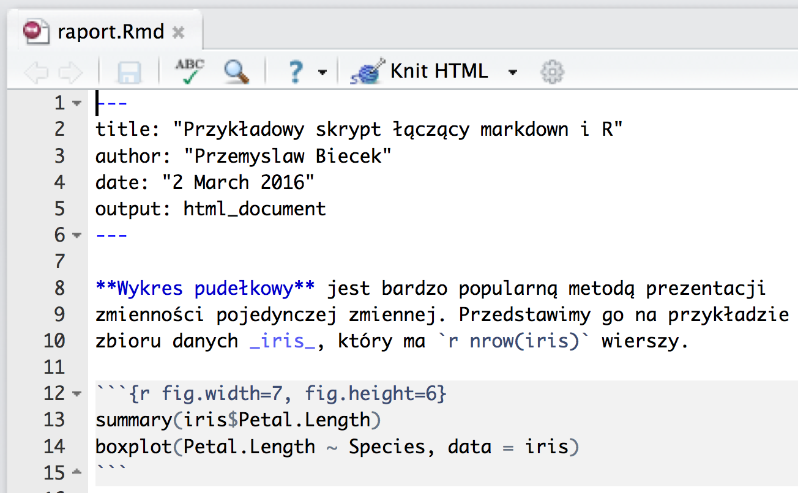
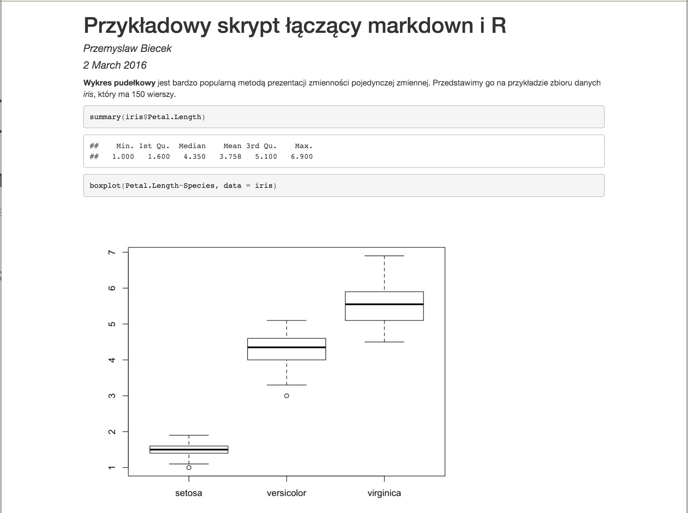

Jak tworzyć raporty z pakietem knitr?
Pakiet knitr można traktować jako prostszą w użyciu wersję pakietu Sweave. Pierwszy oparty jest o łatwy w użyciu język Markdown, drugi bazuje na bardziej złożonym, ale dającym też szersze możliwości języku LaTeX. Logika stojąca za oboma pakietami jest taka sama, więc poniżej omówimy tylko pierwszy.
Filozofia stojąca za tymi pakietami określana jest terminem literate programing, który poniżej jest przetłumaczony jako programowanie objaśniające. Został on zaproponowany przez Donalda Knutha, autora między innymi języka TeX. Za tym terminem kryje się idea, którą można opisać w trzech punktach:
- programy są bezużyteczne bez opisów/dokumentacji,
- opisy powinny wyjaśniać program, zwykłe komentarze w kodzie nie są wystarczające,
- przykładowe kody wykorzystane w opisach powinny być wykonywalne i kompletne.
Potrzebne jest więc narzędzie, które pozwala na proste łączenie kodów R oraz ich opisów. Takie połączenie może być wykorzystane zarówno do dokumentowania kodu, do zapewnienia powtarzalności analiz jak i do automatycznego generowania raportów. Takim narzędziem są pakiety knitr i Sweave.
Pierwszy raport - plik Rmd
Przedstawmy je na przykładzie pliku raport.Rmd. Rozszerzenie Rmd jest potrzebne i oznacza połączenie kodu R i języka markdown.
Zawartość pliku raport.Rmd wygląda następująco.

Taki raport możemy przetworzyć na dwa sposoby
- Jeżeli używamy programu RStudio, to należy otworzyć w edytorze plik
raport.Rmd. Nad nim pojawi się opcjaKnit HTML. Po jej kliknięciu zostanie wygenerowany raport HTML. - Druga opcja to użycie polecenia
knit("raport.Rmd")w linii poleceń. Przetwarzanie plikuRmdskłada się z dwóch etapów. W pierwszymknitruruchamia kod R umieszczony we fragmentach oznaczonych potrójnym apostrofem. Kody wejściowe i ich wynik są umieszczane w pliku o rozszerzeniumd. W drugim etapie program pandoc przetwarza plik w formaciemarkdownna formathtml,pdf,doclub inny wskazany.
Plik markdown md
Dla powyższego przykładu, po pierwszym etapie przetwarzania powstaje plik raport.md o poniższej zawartości.

Jak widzimy, w plik md znajdują się dodatkowo wyniki kodu R.
Plik wynikowy html
W kolejnym roku, plik w formacie md jest konwertowany do pliku html, za pomocą programu pandoc. W naszym przypadku wynikowy plik wygląda następująco.

Parametry YAML i inne formaty
Powyżej przedstawiony plik rozpoczyna się od nagłówka w formacie YAML (YAML Ain't Markup Language) określającym konfiguracje procesu konwersji. Pierwsze linie opisują autora, tytuł i datę.
Kolejna opisuje format, w tym przypadku jest to output: html_document, dlatego plik został przekonwertowany do pliku html.
Jeżeli go zmienimy na output: pdf_document to przycisk Knit HTML zamieni się na Knit PDF a w wyniku kompilacji otrzymamy plik pdf

Nagłówek daje znacznie większe możliwości zmiany wyglądu raportu. Można za pomocą knitra tworzyć serwisy internetowe, można dodawać własne style CSS do HTML, można określać czy i jak mają być umieszczane równania matematyczne, czy ma być dodany spis treści, jaki szablon HTML ma być użyty do generowania strony.
Kompletny opis parametrów, które można określić w nagłówku są opisane w tym pliku.
Parametry wstawki
Wstawka to fragment kodu R otoczony potrójnymi apostrofami. Wstawki są niezależnie wykonywane i przetwarzane. Wstawka rozpoczyna się potrójnym apostrofem, nawiasem klamrowym z wskazaniem jaki program ma być użyty by przetworzyć tę wstawkę (tutaj r) oraz dodatkowymi opcjami wstawki.
Kompletny opis dodatkowych opis znajduje się tutaj.
Najczęściej wykorzystywane opcje to.
message=FALSE,warning=FALSE, domyślnie do wynikowego dokumentu wklejane są wszystkie komunikaty również informacje o błędach i ostrzeżeniach. Te jednak najczęściej zajmują miejsce i niewiele mówią, więc warto je wyłączyć.cache=TRUE, domyślnie każda wstawka jest kompilowana za każdym razem gdy transformuje się dokumentRmd. Jeżeli jednak obliczenia określonej wstawki trwają długo a zawartość wstawki się nie zmieniła, to przy włączonym parametrzecachewstawka nie będzie na nowo wykonywana, a jej wynik będzie pobierany z lokalnego repozytorium.eval=FALSE, w ten sposób można wyłączyć przetwarzanie wstawki. Nie będzie ona wykonana, chociaż odpowiadający jej kod źródłowy będzie umieszczony w raporcie. Przydatna opcja, gdy chcemy przedstawić fragment kodu ale nie potrzebujemy go wykonać (np. ilustrujemy jak pobierać dane z Internetu, ale pobieramy z lokalnej kopii).echo=FALSE, powoduje, że w raporcie pojawi się tylko wynik kodu R, ale nie zostaną umieszczone instrukcje źródłowe. Dzięki temu mamy w raporcie tylko wyniki i możemy wysłać raport osobom, którym kod R nic nei mówi a może przeszkadzać.fig.width=,fig.height=, tymi parametrami można określić jak duży ma być rysunek wklejony do raportu.
Więcej
Więcej informacji o pakiecie knitr, wraz z krótkim video-wprowadzeniem znaleźć można na stronie http://yihui.name/knitr/.